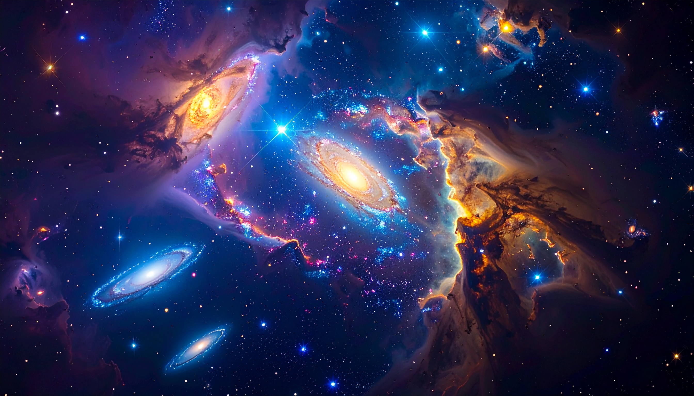
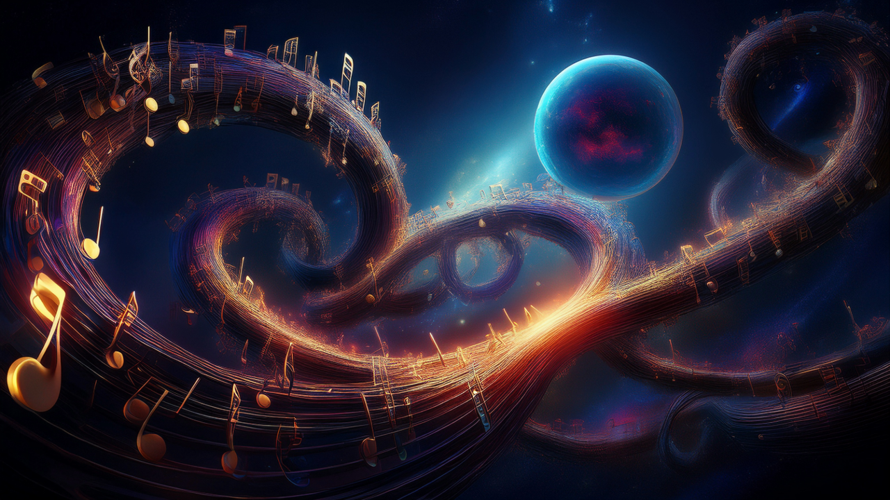
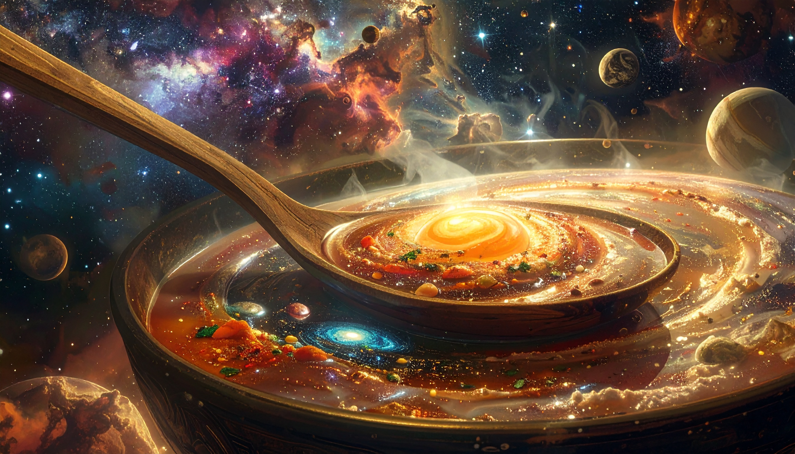
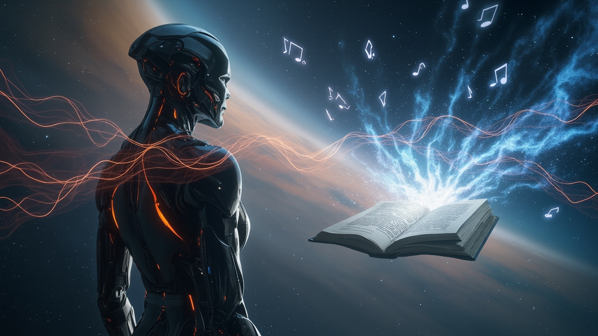
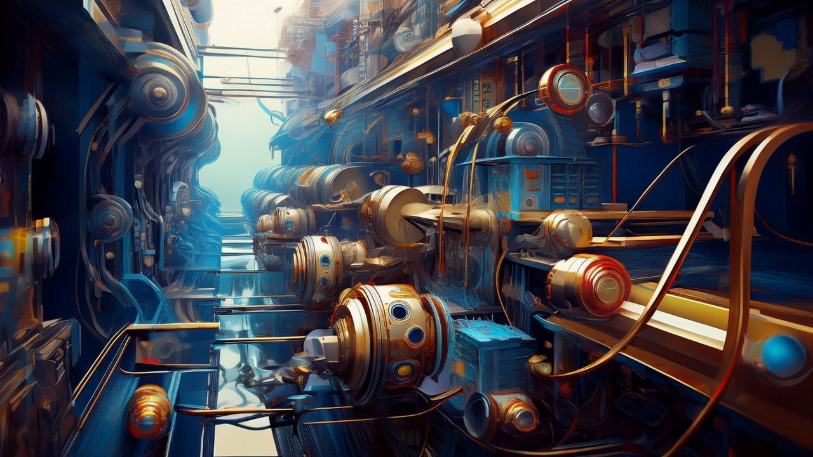
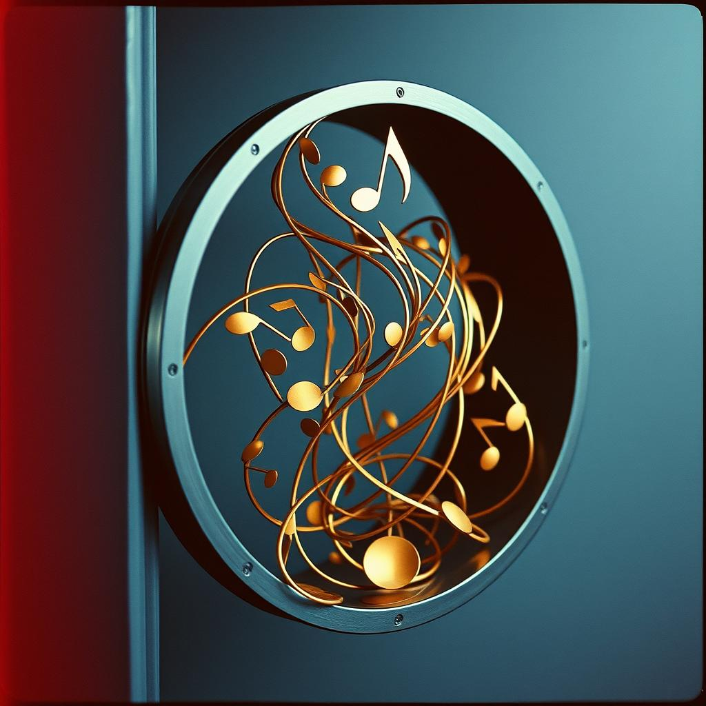
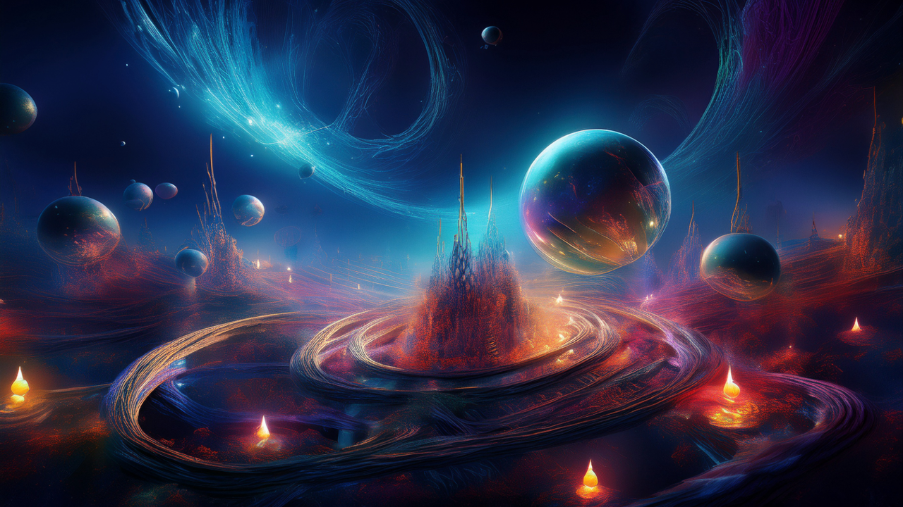

Als technischer Autor nutze ich die inimitable temptation der Worte als Bildmaschine.
Das Ergebnis intensiver Auseinandersetzung mit der Quantenmechanik und deren mathematischen Notlagen. Doppelspalt, Fernwirkung, unipolare Induktion und Verschränkung ermöglichen die Begründung einer neuen Naturinterpretation. Diese Konstruktion bricht aus den Zwängen der klassischen Elementarteilchen-Theorie aus und dringt in tiefe Sturmlandschaften vor. Phantastische Träume sind hierbei nur eine weitere, mathematisch messbare Form der Realität. Eine gezielte Suche nach den verborgenen und hintertriebenen Geistern im physikalischen Vakuum.
Klicke auf ein Bild oder nutze das Pinterest-Icon, um die visuellen Impressionen zu diesem Werk zu merken.






